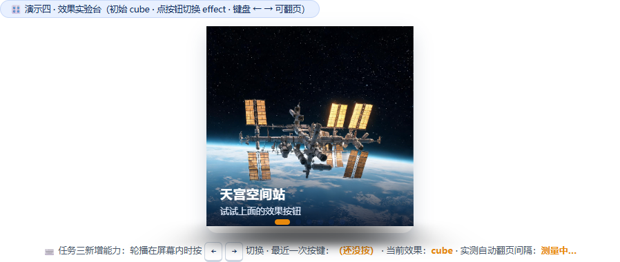
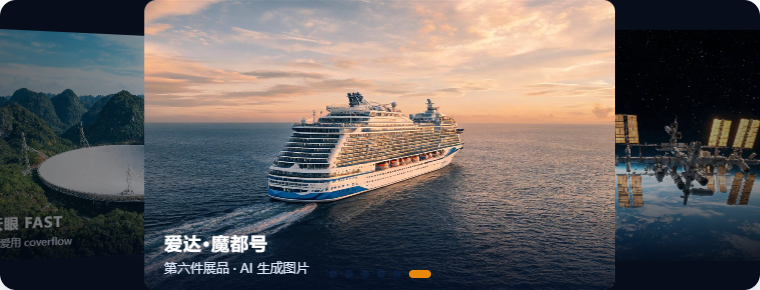
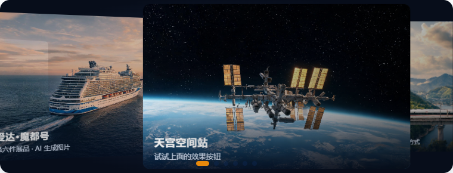
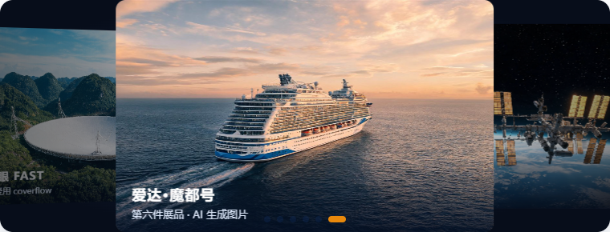
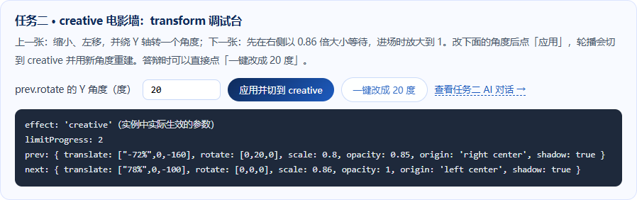
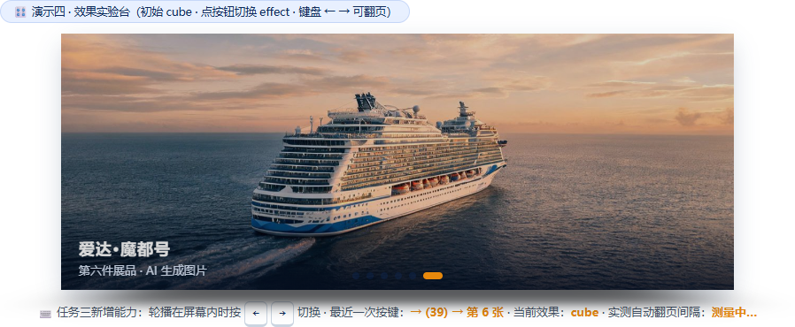
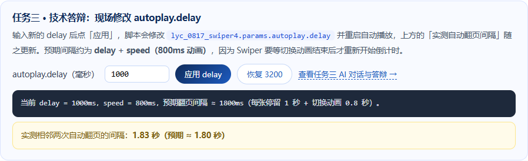

作答页面：swiper-task.html（页面底部「三关进阶 · 现场验证与答辩台」可现场演示每项验证） · 记录整理：2026-11-09
说明：下面的「AI 回答」都是把提示词真实发给 AI（Claude Haiku 5.5）后拿到的原始回答，未改动措辞；回答太长的地方只删去与问题无关的段落，并标注「……（略）」。
需求拆解：让 AI 生成 new Swiper('#lycSw4', {...}) 配置，要求 ① 无缝循环；② 每 3.2 秒自动翻页，手动操作后不停止；③ 圆点分页器可点击；④ 初始效果为 cube。
这段代码把 #lycSw4 初始化成立方体（cube）效果的轮播，能循环播放、自动翻页，下面有可以点击的小圆点。
HTML 结构（Swiper 需要固定的三层结构，小圆点容器要放在 #lycSw4 里面）：
<link rel="stylesheet" href="css/swiper-bundle.min.css">
<div class="swiper" id="lycSw4">
<div class="swiper-wrapper">
<div class="swiper-slide"><img src="img/swiper/1.jpg" alt="轮播图1"></div>
<div class="swiper-slide"><img src="img/swiper/2.jpg" alt="轮播图2"></div>
<div class="swiper-slide"><img src="img/swiper/3.jpg" alt="轮播图3"></div>
<div class="swiper-slide"><img src="img/swiper/4.jpg" alt="轮播图4"></div>
</div>
<!-- 分页小圆点 -->
<div class="swiper-pagination"></div>
</div>
<script src="js/swiper-bundle.min.js"></script>CSS（立方体效果要求容器有明确的宽高）：
#lycSw4 {
width: 300px;
height: 300px;
}
#lycSw4 .swiper-slide img {
display: block;
width: 100%;
height: 100%;
object-fit: cover;
}JS 初始化：
var lyc_0817_lycSw4 = new Swiper('#lycSw4', {
loop: true, // 循环播放
effect: 'cube', // 立方体翻转效果
grabCursor: true, // 鼠标悬停时显示抓手光标
speed: 800, // 翻转一次用时（毫秒）
cubeEffect: {
shadow: true, // 立方体底部投影
slideShadows: true, // 每一面的阴影
shadowOffset: 20, // 投影偏移
shadowScale: 0.94 // 投影缩放
},
autoplay: {
delay: 3000, // 每 3 秒自动翻一页
disableOnInteraction: false, // 用户拖动后继续自动播放
pauseOnMouseEnter: true // 鼠标移上去时暂停
},
pagination: {
el: '#lycSw4 .swiper-pagination', // 小圆点容器
clickable: true // 点击小圆点可以跳到对应的页
}
});不通过粘贴后实测：delay = 3000，不是 3.2 秒；鼠标停在轮播上 5 秒，autoplay.paused = true，一直不翻页；附带的 CSS 把展台压成了 300×300 的小方块；附带的 HTML 图片路径 img/swiper/1.jpg 在项目里不存在。

截图：第 1 轮代码粘进页面后，展台被压成 300×300，鼠标悬停后自动播放暂停这一版只给可以直接粘贴的 JS，放到页面底部的 <script> 里就能用，HTML 和 CSS 都不用改：
var lyc_0817_lycSw4 = new Swiper('#lycSw4', {
loop: true,
effect: 'cube',
speed: 800,
autoplay: {
delay: 3200,
disableOnInteraction: false
},
pagination: {
el: '#lycPag4',
clickable: true
}
});new Swiper('#lycSw4', {...})。分页器用的是 pagination.el: '#lycPag4'，直接指向你页面里那个 <div class="swiper-pagination" id="lycPag4">。loop: true。播到最后一张后会接着回到第一张，中间不会倒退。autoplay.delay: 3200，单位是毫秒。autoplay.disableOnInteraction: false 管手动操作。它的默认值是 true，也就是你一拖或一点，自动播放就停了。设成 false 后会继续播。鼠标悬停这条，我按你的要求没有写 pauseOnMouseEnter。它的默认值是 false，所以鼠标放上去不会暂停。pagination.clickable: true。effect: 'cube' 设定效果，speed: 800 设定每次切换用时。……（略：粘贴位置提示）
第 2 轮代码已原样粘进 swiper-task.html 的 lyc_0817_config4()（因为任务 4 的按钮要销毁重建，所以写成配置函数；初始化时传入 'cube'）。页面「需求验证面板」的「一键自测」会逐项读取实例参数，并实际操作轮播：
① 无缝循环在第 6 张（最后一张）调用 slideNext()，来到第 1 张 ✅② 3.2 秒 + 手动后不停delay = 3200、disableOnInteraction = false；模拟一次拖动后 autoplay.running = true，4.01 秒后又自动翻了一页（0.8 秒动画 + 3.2 秒停留）✅③ 圆点可点击el = #lycPag4、clickable = true，共 6 个圆点；点击第 3 个后 realIndex = 2 ✅④ 初始 cube页面一打开 params.effect = 'cube'，容器带 swiper-cube 类 ✅问：你的第一版提示词漏掉了哪个需求？
漏了三个：只说了“自动翻页”，没说 3.2 秒；没说手动操作后不能停；只说“下面有小圆点”，没说圆点要能点击。另外也没交代页面已有的分页器 #lycPag4，以及“只要 JS、别动 HTML/CSS”。
问：你是怎么在第二轮里“说清楚”的？
① 每个需求单独编号，一条一个要求；② 写出具体数值和单位：“3.2 秒，也就是 3200 毫秒，不是 3 秒”；③ 把容器写死：分页器直接用 #lycPag4；④ 把反面要求也写出来：鼠标悬停也不要暂停，不要加 pauseOnMouseEnter；⑤ 限定输出范围：只要一段可粘贴的 new Swiper，并逐条说明每个需求对应哪个参数，方便我核对。
问：AI 第一次给的代码错在哪？
① delay: 3000，是 3 秒，不是 3.2 秒；② 自作主张加了 pauseOnMouseEnter: true，鼠标一放上去自动播放就暂停（实测 5 秒都不翻页），违反“手动操作后不停止”；③ 附带的 CSS 把 #lycSw4 写死成 300×300，附带的 HTML 图片路径 img/swiper/1.jpg 根本不存在，照抄会把页面弄坏。disableOnInteraction: false 和 clickable: true 这两项它碰巧写对了，但那是它自己猜的，我的提示词里并没有要求，所以不能指望下次也猜对。
官方示例：swiper/demo/257-effect-creative.html 里有 6 个 creative 写法，共同点都是 effect: "creative" 加 creativeEffect: { prev: {...}, next: {...} }。例如第 1 个是 prev: { shadow: true, translate: [0, 0, -400] }、next: { translate: ["100%", 0, 0] }；第 6 个用 origin 加 rotate: [0, 100, 0] 做成翻书效果。
creative 是怎么动的：你只需要描述两种状态——prev：上一张（在当前这张左边，Swiper 内部 progress = +1）应该长什么样；next：下一张（在当前这张右边，progress = -1）应该长什么样。当前这张始终是原样（progress = 0）。拖动或自动播放时，Swiper 按 progress 在原样和 prev/next 之间线性插值。
下一张放大、从右边移进来 → next 在右边时也是缩小的（scale < 1，X 为正）。它滑到中间时会从 0.8 左右放大回 1，看起来就是“放大着移进来”。如果把 next 的 scale 设成大于 1，右边那张会比中间那张还大，不像选片墙。
var lycCreativeWall = {
limitProgress: 2, // 左右各算 2 张；第 2 张的变换是第 1 张的 2 倍
perspective: true,
prev: {
translate: ["-50%", 0, -150], // X 往左移半个 slide 宽，Y 不动，Z 往屏幕里推 150px
rotate: [0, 18, -4], // 绕 Y 转 18°，绕 Z 逆时针歪 4°
scale: 0.82, opacity: 0.75, origin: "center center"
},
next: {
translate: ["50%", 0, -150], rotate: [0, -18, 4],
scale: 0.82, opacity: 0.75, origin: "center center"
}
};“看到旁边海报”的关键：CSS——creative 会把所有 slide 叠到同一个位置，再分别做 transform，所以 slidesPerView 对它基本没用。要露出两边，比较稳的做法是：slide 保持 100% 宽、背景透明，里面的海报只占约 58% 宽并居中……
#lycSw4.lyc-fx-creative { height: 360px; }
#lycSw4.lyc-fx-creative .swiper-slide img {
width: 58%; aspect-ratio: 2 / 3; object-fit: cover; ……
}……（略：data-fx 切换函数，与我页面已有逻辑相同）
translate：[X, Y, Z] 位移，写字符串可以用 "%"，相对于 slide 自身的宽或高；Z 只能写数字（px）。rotate：[X, Y, Z] 单位是度，绕 Y 轴是左右转、像开门。scale：1 是原尺寸，0.82 是缩到 82%。最终生成的顺序是 translate3d() rotateX() rotateY() rotateZ() scale()。
.lyc-cap 仍是整张宽，和缩窄后的海报对不上。swiper/swiper-bundle.js 第 9280 行，creative 在 centeredSlides: true 时会把 wrapper 平移到中间，所以我直接把 slide 缩到 62% 宽，配合 slidesPerView: 'auto' 和 centeredSlides: true，两侧自然露出相邻海报。speed: 800，我保留了原来的 800ms。prev 加了 Y 轴旋转，next 不转，只是先缩小、进场时放大；绕 Z 轴的歪斜去掉了，画面更平整。最终实现（swiper-task.html → lyc_0817_config4()，按钮文字为「creative 电影墙」）：
if (lyc_0817_effect === 'creative') {
lyc_0817_cfg.slidesPerView = 'auto'; // 配合 CSS：#lycSw4.lyc_0817_wall .swiper-slide{width:62%}
lyc_0817_cfg.centeredSlides = true;
lyc_0817_cfg.creativeEffect = {
limitProgress: 2,
prev: { shadow: true, origin: 'right center', translate: ['-72%', 0, -160],
rotate: [0, 30, 0], scale: 0.8, opacity: 0.85 }, // 上一张：缩小 + 左移 + 转 30°
next: { shadow: true, origin: 'left center', translate: ['78%', 0, -100],
scale: 0.86 } // 下一张：右侧等待，进场时 0.86 → 1 放大
};
}
截图：电影墙静止画面，左边是缩小、带角度的上一张，右边是等待进场的下一张
截图：切换中间帧，当前张向左缩小转开，下一张从右侧放大进场1. prev 管当前卡左边的卡（progress = +1）。它往左移自身宽度的 72%，往屏幕里退 160px，以自己的右边缘为轴绕 Y 轴转 30°，缩到 0.8，不透明度 0.85，再叠一层阴影。next 管右边的卡（progress = -1）。它往右移 78%，往里退 100px，缩到 0.86，不旋转，也带阴影。切换的 800ms 里，Swiper 按 progress 做线性插值：当前卡往左走，progress 从 0 变到 1，参数从原样逐渐变成 prev 的值；右边的卡进场，progress 从 -1 变到 0，参数从 next 的值逐渐恢复原样，也就是一边放大一边移到中间。limitProgress: 2：两侧第 2 张按 2 倍计算，左 2 是 -144%、Z 退 320px、转 60°、scale 0.6……
2. 相对 slide 自身的宽度，不是容器宽度。Swiper 生成的是 translate3d(calc(-72% * progress), …)，CSS 的 translate 百分比按元素自身尺寸算。你的 slide 宽 62%，所以 -72% 约等于容器宽度的 44.6%，78% 约等于容器宽度的 48.4%。Z 轴不能用百分比，只能写 px 数字。
3. 把 prev 的 rotate: [0, 30, 0] 改成 [0, 20, 0]。改完左边的卡仍以右边缘为轴，但转得浅了，梯形透视变弱，看起来更接近正面；投影宽度会略微变宽（cos20° ≈ 0.94，cos30° ≈ 0.87），所以卡片会往左多露出一点；左 2 那张从 60° 变成 40°。如果老师的意思是两边都转 20 度，就在 next 里加 rotate: [0, -20, 0]。
问：transform 里的百分号是相对谁的？
相对slide 自己的尺寸：X 方向的 % 按 slide 自身宽度算，Y 方向的 % 按 slide 自身高度算，不是按容器算。证据：Swiper 源码把它拼成 translate3d(calc(-72% * progress), …) 写在 slide 元素自己的 style.transform 上，而 CSS 规定 translate 的百分比相对元素自身的边框盒。本页 slide 宽 62%，所以 -72% 实际约是容器宽度的 44.6%。Z 方向不能写 %，只能写像素。
问：改一个数值让卡片转 20 度试试？
把 prev.rotate 的第二个数（绕 Y 轴）从 30 改成 20。页面「任务二 · transform 调试台」点「一键改成 20 度」即可现场演示。实测上一张的 transform 变成 … rotateY(20deg) … scale(0.8)，左侧海报侧转变浅、更接近正面，露出的面积稍大；左边第 2 张从 60° 变成 40°。

截图：rotate 改成 20 度后的电影墙
截图：调试台显示实例里实际生效的 creativeEffect（rotate: [0,20,0]）swiper-imgs/aida_modu.jpg，由 AI 生图生成，实测 naturalWidth × naturalHeight = 1280 × 720，正好 16:9。photorealistic aerial photograph of "Adora Magic City" (爱达·魔都号), China's first domestically built large cruise ship, sailing on deep blue ocean at golden hour, 16:9 landscape, cinematic travel photography, no text#lycSw1—#lycSw4）都加了第 6 张 slide，结构与其他展品一致：swiper-slide → img（含 alt）+ .lyc-cap（h3 标题 + p 简介）。实测四个轮播都是 6 张，圆点 6 个。<div class="swiper-slide">
<img src="swiper-imgs/aida_modu.jpg" alt="爱达·魔都号">
<div class="lyc-cap"><h3>爱达·魔都号</h3><p>2024 年 1 月商业首航 · 首艘国产大型邮轮</p></div>
</div>选择理由：mousewheel 会抢走整页滚动；zoom 要改 HTML 结构（加 swiper-zoom-container）；keyboard 只要加一段配置，答辩时按方向键就能现场演示。
要实现「键盘 ← → 切换」，只需在配置里加一个 keyboard 参数。你用的是 swiper-bundle.min.js，它已经包含 Keyboard 模块，所以不用另外引入文件，也不用注册模块。
new Swiper('#lycSw4', {
loop: true,
speed: 800,
effect: 'cube',
grabCursor: true,
autoplay: { delay: 3200, disableOnInteraction: false },
pagination: { el: '#lycPag4', clickable: true },
// 新增：键盘控制
keyboard: {
enabled: true, // 开启键盘控制
onlyInViewport: true, // 只有轮播出现在可视区域内时才响应按键
pageUpDown: false // 不让 PageUp / PageDown 键切换
}
});keyboard，其他 3 个不加；保留 onlyInViewport: true，这样 #lycSw4 滚出屏幕后，按方向键不会让它在看不见的地方继续翻。disableOnInteraction: false，用键盘切换后自动播放会继续，不会停下来。input / textarea 里打字时，Swiper 会忽略方向键，不会误切换。1. 大约 1800ms，也就是 delay 1000 加上动画 800。Swiper 11 的自动播放不是固定每隔 delay 翻一次，而是：倒计时 delay 毫秒，然后翻页；翻页动画播放 speed 毫秒；动画结束（触发 transitionEnd）后，才开始下一轮 delay 倒计时。所以现在的配置是 3200 + 800 ≈ 4000ms；改成 1000 后是 1000 + 800 ≈ 1800ms。
var s = document.querySelector('#lycSw4').swiper; // 取到已经创建好的实例
s.params.autoplay.delay = 1000; // 改参数
s.autoplay.stop(); // 停掉当前这一轮倒计时
s.autoplay.start(); // 用新的 delay 重新开始只改 s.params.autoplay.delay 也会生效，但要等正在走的这一轮旧倒计时结束，下一轮才用新值；加上 stop() 和 start()，新值就马上生效。

截图：第六件展品爱达·魔都号；先按 ← 再按 →，回显“→ (39) → 第 6 张”
截图：delay 改成 1000 后，实测间隔 1.83 秒（预期 ≈ 1.80 秒）问 1：这段代码什么意思？
keyboard 打开 Swiper 自带的键盘模块：enabled: true 表示横向轮播按 → 下一张、按 ← 上一张；onlyInViewport: true 表示只有 #lycSw4 出现在屏幕里时才响应，滚走之后按键不会让它偷偷翻页；pageUpDown: false 把 PageUp / PageDown 留给页面滚动。我另外加了 on.keyPress 事件，在轮播下方显示“最近一次按键 → 第几张”，方便现场确认按键确实被轮播接收。
问 2：AI 第一次给的哪里不对？你改了什么？
① AI 给的是一个独立的 new Swiper('#lycSw4', {...})，没有赋值给变量。但我的页面点效果按钮时要先 destroy 再 new，照抄的话一换效果键盘功能就没了，旧实例也没法销毁。所以我把 keyboard 写进公共配置函数 lyc_0817_config4()，每次重建都带上，实例保存在 lyc_0817_swiper4。② 任务二里 AI 建议把图裁成 2:3 竖图，还说“slidesPerView 对 creative 没用”。我查源码后改用 62% 宽 slide 加 centeredSlides，保留了 16:9 横图，也补回了它漏掉的 speed: 800。③ 任务一里 AI 第 1 轮写成了 3000ms，还加了 pauseOnMouseEnter，第 2 轮按我的约束改正了。
问 3：新参数的作用？
keyboard.enabled：开启方向键翻页；keyboard.onlyInViewport：只在轮播可见时响应（页面上有 4 个轮播，只有 #lycSw4 开了键盘，不会互相干扰）；keyboard.pageUpDown：是否让 PageUp/PageDown 也翻页，这里关掉；on.keyPress(swiper, keyCode)：Swiper 每处理一次按键就触发，37 是 ←，39 是 →。另外，任务二新增的 slidesPerView: 'auto' 和 centeredSlides: true 让窄海报居中、两侧露出邻居，creativeEffect.limitProgress: 2 让左右各显示 2 张。
问 4：现场把 delay 改成指定值，并解释预期变化
操作：在页面「任务三 · 现场修改 autoplay.delay」输入新值，点「应用 delay」；或在控制台执行 lyc_0817_swiper4.params.autoplay.delay = 1000; lyc_0817_swiper4.autoplay.stop(); lyc_0817_swiper4.autoplay.start();。
预期：两次自动翻页的间隔 ≈ delay + speed。因为 Swiper 是在切换动画（speed = 800ms）结束后才开始下一轮 delay 倒计时（源码里 beforeTransitionStart 时暂停、动画结束后恢复）。实测结果：delay = 3200 时间隔 4.04 秒（预期 4.0 秒）；delay = 1000 时间隔 1.83 秒（预期 1.8 秒）。delay 越小翻得越快，但最短也不会快于 0.8 秒的动画时长；如果老师给的是 5000，预期间隔就是约 5.8 秒。
swiper-task.html能运行的页面：初始 cube、7 个效果按钮（含 creative 电影墙）、6 件展品、键盘 ← →，以及底部「三关进阶 · 现场验证与答辩台」swiper-task-record.html本页：提示词访问入口（每轮提示词 + AI 原始回答 + 验证 + 答辩）swiper-task-record.md与本页内容一致的 Markdown 版，方便在 GitHub 上直接阅读swiper-imgs/aida_modu.jpgAI 生成的第六件展品图片（1280×720，16:9）.screenshots/swiper-task/本页引用的全部验证截图本地运行：在项目根目录执行 python -m http.server 8080，打开 http://localhost:8080/swiper-task.html。